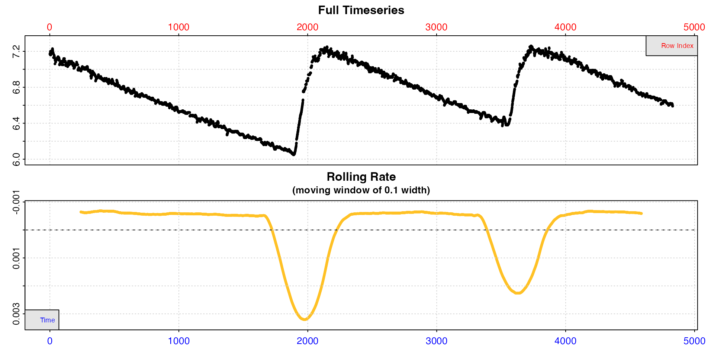
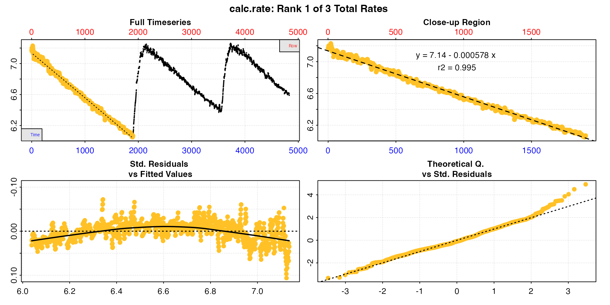
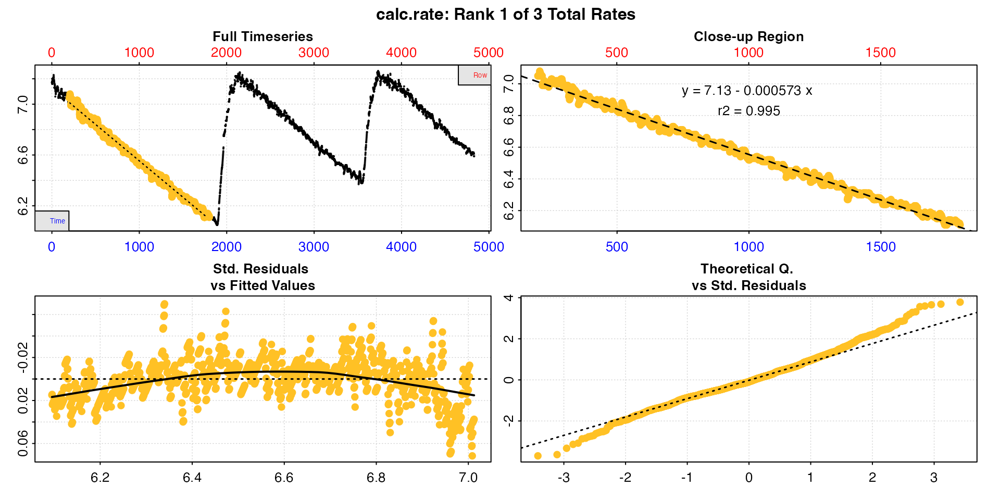
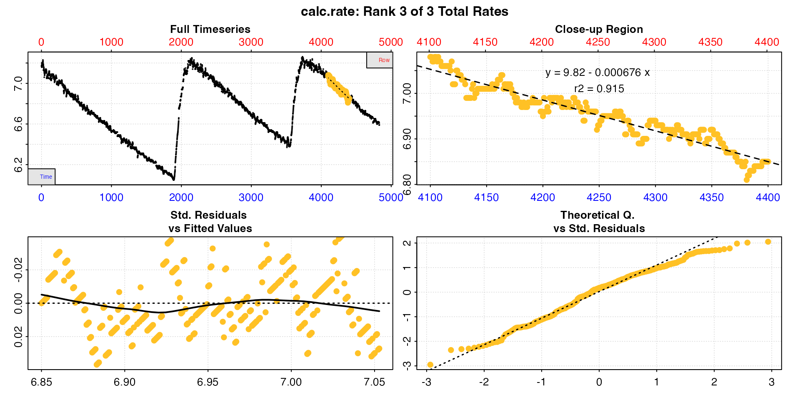
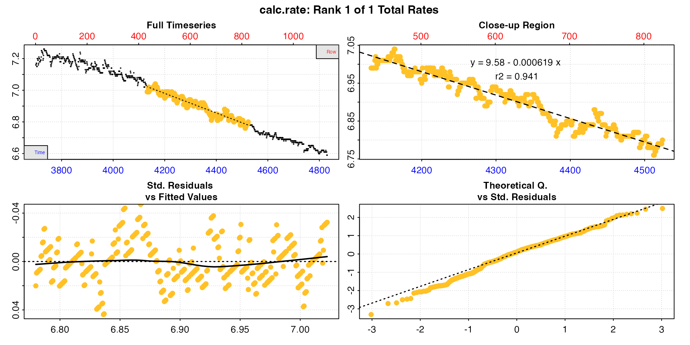

vignettes/archive/intermittent_old.Rmd
intermittent_old.RmdThe following are alternative methods of extracting rates from
multiple replicates in intermittent-flow respirometry using
calc_rate or auto_rate. They have been mostly
superseded by calc_rate.int and auto_rate.int.
See vignette("intermittent_long").
However we have left the details here in case they are of use in other cases. The main advantage to these are that they allow rates to be extracted from different data regions within each replicate or allow different methods to be used.
calc_rate
calc_rate.int allows consistent region selection
criteria to be applied to each replicate, and is usually the best way of
extracting rates from intermittent-flow data. calc_rate
however also allows you to extract multiple rates from a dataset in a
single command, and this can allow for rates from different regions in
each replicate. Obviously, this requires you to know the row locations
or timings of replicates.
calc_rate allows data regions to be chosen by
oxygen, time, or row ranges. In
the case of row or time, multiple subset
regions can be specified, with the from and to
inputs acting as vectors of paired values. Using this we can extract a
rate from each replicate with one command.
We can use the same replicate start and end locations as in the example here to extract a rate from each complete replicate.
# inspect data
urchin_int <- inspect(intermittent.rd)
#> inspect: Applying column default of 'time = 1'
#> inspect: Applying column default of 'oxygen = 2'
#> inspect: No issues detected while inspecting data frame.
# calc rates
urchin_int_rates <- calc_rate(urchin_int,
from = c(1, 2101, 3901),
to = c(1900, 3550, 4831),
by = "row")
summary(urchin_int_rates)
#>
#> # summary.calc_rate # -------------------
#> Summary of all rate results:
#>
#> rep rank intercept_b0 slope_b1 rsq row endrow time endtime oxy endoxy rate.2pt rate
#> 1: NA 1 7.135 -0.0005777 0.995 1 1900 0 1899 7.17 6.07 -0.0005793 -0.0005777
#> 2: NA 2 8.473 -0.0005893 0.994 2101 3550 2100 3549 7.22 6.38 -0.0005797 -0.0005893
#> 3: NA 3 9.621 -0.0006280 0.989 3901 4831 3900 4830 7.16 6.59 -0.0006129 -0.0006280
#> -----------------------------------------We can see this produces exactly the same result as in the example here.
Note, because calc_rate.int has not been used there are no
values in the $rep column. calc_rate does not
consider multiple rates as coming from separate replicates. Instead it
ranks them in order of inputs, as indicated by the $rank
column.
We can also extract by time values, and here we will also apply a different time window within each replicate.
urchin_int_rates <- calc_rate(urchin_int,
from = c(200, 2300, 4100),
to = c(1800, 3000, 4400),
by = "time")
By default, the first is shown in print and
plot, but the pos input can be used to view
others.
plot(urchin_int_rates, pos = 3)
Calling summary() will show the coefficients, locations
and values of all rates:
summary(urchin_int_rates)
#>
#> # summary.calc_rate # -------------------
#> Summary of all rate results:
#>
#> rep rank intercept_b0 slope_b1 rsq row endrow time endtime oxy endoxy rate.2pt rate
#> 1: NA 1 7.127 -0.0005734 0.995 201 1801 200 1800 7.05 6.11 -0.0005875 -0.0005734
#> 2: NA 2 8.529 -0.0006100 0.985 2301 3001 2300 3000 7.12 6.68 -0.0006286 -0.0006100
#> 3: NA 3 9.825 -0.0006760 0.915 4101 4401 4100 4400 7.08 6.85 -0.0007667 -0.0006760
#> -----------------------------------------Using calc_rate like this allows you to extract rates
from different regions within each replicate, or even multiple
rates from each.
subset_data
Another option for extracting replicates from a larger dataset is the
subset_data function. This allows you to easily subset both
data frames and inspect objects by time, row, or oxygen
ranges. You can then pipe (|> or %>%)
the subset directly to other functions such as calc_rate or
auto_rate, or alternatively save replicates as separate
objects for further analysis.
Here, we use the inspect object we saved earlier
containing the whole dataset, to create new inspect objects
for each replicate. These can be treated like any other
inspect object, including being passed to
print and plot.
# Create separate replicate data frames
u_rep1 <- subset_data(urchin_int, from = 1, to = 1900, by = "time")
u_rep2 <- subset_data(urchin_int, from = 2100, to = 3500, by = "time")
u_rep3 <- subset_data(urchin_int, from = 3700, to = 4831, by = "time")Now we can calculate a rate from each, showing the results from the
third one here. Unlike calc_rate.int, using this method you
are not restricted to extracting the rate from the exact same region
within each replicate. In addition, this approach allows you to use the
by = "oxygen" method.
u_rate1 <- calc_rate(u_rep1, from = 7.1, to = 6.7, by = "oxygen")
u_rate2 <- calc_rate(u_rep2, from = 7.1, to = 6.8, by = "oxygen")
u_rate3 <- calc_rate(u_rep3, from = 7.0, to = 6.8, by = "oxygen")
Alternatively, pipe the result, which has the advantage of not filling your local environment with redundant objects and overall makes for a tidier workflow.
u_rate3 <- urchin_int |>
subset_data(from = 3700, to = 4831, by = "time") |>
calc_rate(from = 7.0, to = 6.8, by = "oxygen")
summary(u_rate3)
#>
#> # summary.calc_rate # -------------------
#> Summary of all rate results:
#>
#> rep rank intercept_b0 slope_b1 rsq row endrow time endtime oxy endoxy rate.2pt rate
#> 1: NA 1 9.579 -0.0006187 0.941 433 825 4132 4524 6.99 6.8 -0.0004847 -0.0006187
#> -----------------------------------------A number of approaches could be used to iterate respR
functions to analyse these types of experiment; this is merely an
example to illustrate how respR can be easily iterated over
multiple replicates. For most purposes calc_rate.int or
auto_rate.int are better options.
Here we will show a simple for loop to subset each
replicate from the zeb_intermittent.rd data and run
auto_rate(method = "linear") on it. We use a ‘wait’ period
of 2 minutes (120s), and a ‘measure’ period of 7 minutes (420s), leaving
2 minutes of flushing excluded.
For actual analyses it is highly recommended you examine the plot of
each replicate, or at very least those used in determining a final rate.
Here in the interests of speed we suppress it with
plot = FALSE. Note also this code will create a
list object containing an auto_rate object for
every replicate, which will be quite large (several MB).
# define wait and measure periods
wait <- 120 # 2 mins wait
measure <- 420 # 7 mins measure
## start rows for each rep using sequence function (from, to, by)
reps <- seq(5840, 74480, 660)
## data starts - apply wait
starts <- reps + wait
## data ends - apply wait and measure period
ends <- reps + wait + measure
## Empty list for saving results
zeb_rmr <- list()
## loop
for(i in 1:105){
st <- starts[i] # start time
et <- ends[i] # end time
## subset replicate and pipe the result into auto_rate
zeb_rmr[[i]] <- subset_data(zeb, from = st, to = et, by = "time") |>
auto_rate(method = "linear", plot = FALSE)
}We can extract and view the top-ranked rate result from each
replicate using the sapply function.
## extract rates
rmr_rate <- sapply(zeb_rmr, function(z) z$rate[1])
plot(rmr_rate, ylim = rev(range(rmr_rate)))Note, we plot on a reverse axis so higher rates are higher on the plot. We can see that rates are higher in the initial stages of the experiment, then are quite consistent after they stabilise.
This saves pre- and post-experiment background rates for use in the next step.
bg_pre <- zeb |>
subset_data(from = 1, to = 4999, by = "row") |>
calc_rate.bg()
bg_post <- zeb |>
subset_data(from = 75140, to = 79251, by = "row") |>
calc_rate.bg()Here we use lapply to apply the adjustment to each
element of the RMR results list of auto_rate objects and
return a new list of adjust_rate objects.
zeb_rmr_adj <- lapply(zeb_rmr, function(z) adjust_rate(z,
by = bg_pre,
by2 = bg_post,
method = "linear"))Once again we will use lapply to loop through the SMR
list of adjust_rate objects and convert the rates for each
replicate.
zeb_rmr_conv <- lapply(zeb_rmr_adj, function(z) convert_rate(z,
oxy.unit = "mg/L",
time.unit = "secs",
output.unit = "mg/h/g",
volume = 0.12,
mass = 0.0009))We’ll look at two examples. This is the top-ranked result from these two replicates, though the actual object will contain more.
summary(zeb_rmr_conv[[10]], pos = 1)
#>
#> # summary.convert_rate # ----------------
#> Summary of converted rates from entered 'pos' rank(s):
#>
#> rep rank intercept_b0 slope_b1 rsq density row endrow time endtime oxy endoxy rate adjustment rate.adjusted rate.input oxy.unit time.unit volume mass area S t P rate.abs rate.m.spec rate.a.spec output.unit rate.output
#> 1: NA 1 33.62 -0.002182 0.9 1543 127 259 12026 12158 7.364 7.116 -0.002182 -0.00008027 -0.002102 -0.002102 mg/L sec 0.12 0.0009 NA NA NA NA -0.908 -1.009 NA mgO2/hr/g -1.009
#> -----------------------------------------
summary(zeb_rmr_conv[[90]], pos = 1)
#>
#> # summary.convert_rate # ----------------
#> Summary of converted rates from entered 'pos' rank(s):
#>
#> rep rank intercept_b0 slope_b1 rsq density row endrow time endtime oxy endoxy rate adjustment rate.adjusted rate.input oxy.unit time.unit volume mass area S t P rate.abs rate.m.spec rate.a.spec output.unit rate.output
#> 1: NA 1 140.7 -0.002059 0.965 1255 122 397 64821 65096 7.193 6.644 -0.002059 -0.0001139 -0.001945 -0.001945 mg/L sec 0.12 0.0009 NA NA NA NA -0.8402 -0.9336 NA mgO2/hr/g -0.9336
#> -----------------------------------------This is similar to the other operations above, in that we use an
apply function to extract the top ranked final converted
rate from each replicate.
zeb_rmr_all <- sapply(zeb_rmr_conv, function(z) z$rate.output[1])Now we can plot them. Again, we reverse the y-axis.
It depends on the experiment how we might want to define the final RMR. This is the routine metabolic rate, so we want a rate that represents routine behaviour. Here, rates are very consistent after number 20, apart from one obvious outlier in number 89.
zeb_rmr_all[88:90]
#> [1] -0.9576 -1.2966 -0.9336Therefore, we will not use this one, but take the mean of all others from 20 onwards. This is just one approach of many we could apply. See here.
This is our final RMR: -0.96 mg/h/g.
Thius is the same analysis as above but using exclusively the
apply family of functions.
# Import and inspect raw data ---------------------------------------------
# Importing would normally be the first step, e.g. read.csv("path/to/file")
zeb <- inspect(zeb_intermittent.rd)
# Background --------------------------------------------------------------
bg_pre <- subset_data(zeb, from = 0, to = 4999, by = "time") |>
calc_rate.bg()
bg_post <- subset_data(zeb, from = 75140, to = 79251, by = "time") |>
calc_rate.bg()
# Replicate structure -----------------------------------------------------
wait <- 120 # 2 mins wait
measure <- 420 # 7 mins measure
reps <- seq(5840, 74480, 660) ## start rows
starts <- reps + wait ## data starts
ends <- reps + wait + measure ## data ends
# Subset each replicate ---------------------------------------------------
zeb_rmr_subsets <- apply(cbind(starts,ends), 1, function(z) subset_data(zeb,
from = z[1],
to = z[2],
by = "time"))
# auto_rate on each replicate ---------------------------------------------
zeb_rmr <- lapply(zeb_rmr_subsets, function(z) auto_rate(z,
method = "linear",
plot = FALSE))
# Adjust ------------------------------------------------------------------
zeb_rmr_adj <- lapply(zeb_rmr, function(z) adjust_rate(z,
by = bg_pre,
by2 = bg_post,
method = "linear"))
# Convert -----------------------------------------------------------------
zeb_rmr_conv <- lapply(zeb_rmr_adj, function(z) convert_rate(z,
oxy.unit = "mg/L",
time.unit = "secs",
output.unit = "mg/h/g",
volume = 0.12,
mass = 0.0009))
# Extract rates -----------------------------------------------------------
zeb_rmr_all <- sapply(zeb_rmr_conv, function(z) z$rate.output[1])
# Calculate final rmr -----------------------------------------------------
zeb_rmr_final <- mean(zeb_rmr_all[c(20:88,90:105)]) #> [1] -0.9547